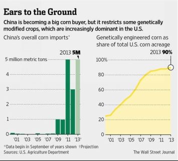

Chapter Four:
Food Wars – “Control the food, you control the people”
Over the past thirty or more years the most dramatic change in the food consumption in the history of China has taken place. The change has occurred slowly,such that most Chinese consumers greeted new products from mostly American food outlets as a tasty modern alternative to traditional Chinese food. Today this subtle destruction of the nutritional content of the Chinese diet has manifested in a crisis of explosive dimension.
Food as a weapon
Using food as a weapon to starve enemy populations or otherwise control peoples is an ancient practice of warfare. In the past several decades, the use of food as a weapon has been raised to a new level of sophistication by powerful agribusiness corporations tied to political and financial elites in the United States and Britain. The “weaponization” of the human and animal food chain over the past two decades by Washington has been refined into one of the most insidious threats to the future of the Peoples’ Republic of China.
The main source of the problem has been the spread of US fast food chains such as McDonalds, KFC (Kentucky Fried Chicken), Pizza Hut and other large US corporations. The longer-term problem arises from the incursions of US-led agribusiness giants into the agricultural structures of the Peoples’ Republic to the point where it has become an unrecognized national security crisis.
Fast Food Dangers – Destroying nutrition
The prevalence of industrial fast food, especially for Chinese youth, represents a major threat to the health and vitality of the next generation. Already, an epidemic rise in the number of cases of diabetes in China in recent years has been reported. In just twenty years, China has gone from a land where diabetes was almost unknown, to what is called the “diabetes capital of the world.” What changed among young Chinese in those thirty years? Primarily what has changed is their consumption of Western-based junk food and industrialized, processed food containing huge amounts of sugars.
One recent study found the rate of diabetes among Chinese teenagers to be four times that of US teenagers – and the US itself has undergone a severe rise in diabetes. This diabetes epidemic will bring a huge burden for the Chinese health system and a dramatic weakening of China’s labor power in the next several years, barring emergency action by the Beijing authorities.[93]
The ingredients in the mass-produced industrialized fast food from the United States have now been shown to be responsible for the recent epidemics of obesity and diabetes. In 2004, the respected British medical journal The Lancet,[94] published the results of a long-term, fifteen-year scientific study involving more than 3,000 subjects, showing a strong connection between fast-food consumption, obesity, and risk for type 2 diabetes. Called the Coronary Artery Risk Development in Young Adults (CARDIA) study, it was conducted by Mark Pereira, Ph.D., assistant professor in epidemiology, University of Minnesota School of Public Health, and David Ludwig, M.D., Ph.D., director of the Obesity Program at Children’s Hospital Boston, Massachusetts.
The results showed that fast food increases the risk of obesity and type 2 diabetes.
Participants who consumed fast food two or more times a week gained approximately 10 pounds and had twice as great an increase in insulin resistance over the 15-year period than participants who consumed fast food less than once per week.[95]
“Fast-food consumption has increased in the United States during the past three decades,” said Pereira. “While there have been many discussions about fast-food’s effects on obesity, this appears to be the first scientific, comprehensive long-term study to show a strong connection between fast-food consumption, obesity, and risk for type 2 diabetes,” he noted. “The CARDIA study factored in and monitored lifestyle factors including television viewing, physical activity, alcohol consumption, and smoking, but determined that increase in body weight and insulin resistance from fast-food intake seemed to be largely independent of these other lifestyle factors,” said Ludwig.[96]
Another scientific study showed that fast-food diets can actually damage the brain.[97] The study in the Journal of Clinical Investigation, showed that fast food could actually scar the human brain. Researchers from the Diabetes and Obesity Center of Excellence at the University of Washington, who led the study, fed rats and mice a high-fat diet (HFD) similar to the classic American fast food diet. After just one day, the rodents showed inflammation in the hypothalamus – the area that produces the hormones that control hunger, thirst, sleep, moods and the rhythms of the body.[98]
The study concluded that, “In summary, we report that, in rats and mice that are susceptible to DIO [diet-induced obesity], consumption of a HFD rapidly induces neuron injury in a brain area critical for energy homeostasis… Extending these findings is MRI [magnetic resonance imaging] evidence for gliosis [scar tissue] in the hypothalamus of obese humans. Collectively, this work identifies a potential link between obesity and hypothalamic injury in humans as well as animal models.”[99]
More and more young Chinese are becoming obese as a result of changes in their diet, introducing these harmful elements. What is little discussed is the fact that the reason younger Chinese keep eating American “junk food,” such as that turned out by global chains like KFC or McDonalds, is the fact that the producers have deliberately laced their chicken, burgers and other fast food with addictive chemicals. Junk food in a real sense is becoming China’s new Opium War. In this Opium War, the warships are not waiting outside Canton harbor. They are largely invisible.
Junk food as new Opium War?
Most alarming is that the high-fat/high-sugar junk food that is being spread across China has been proven to be as addictive as heroin. In effect, the spread of McDonalds or KFC and similar foods in China is a new Opium War every bit as destructive, or more so, than the 1840’s opium war.
A study by the American Scripps Research Institute in Florida found that the ingredients in typical junk food, especially the high-fructose corn syrup and other sugars, trigger the same center in the brain as hard drugs like opium or cocaine. In controlled experiments feeding rats junk food, the researchers found the alarming results that “Pleasure centers in the brains of those fed high-fat, high-calorie food became less responsive over time – a signal that the rats were becoming addicted. The rats started to eat more and more. They even went for the junk food when they had to endure an electric shock to get it.” According to Dr. Louis J. Aronne, professor at Weill Cornell Medical School and former president of The Obesity Society, the human “brain reacts almost identically to that of a cocaine addict looking at cocaine. And the interesting thing is that someone who is obese has even more similarity to the cocaine addict. ... In many ways, they can be addicted to junk food.”[100]
If there is not a dramatic cut in consumption of so-called junk food in the American diet, it is estimated that 50% of the entire US population will be obese in 28 years.
Flavor enhancers like monosodium glutamate (MSG) are another common type of industrial food ingredient whose serious danger has been covered over or disregarded by the US Food and Drug Administration (FDA). Among the dangers of excessive MSG consumption is dementia. One scientific study noted recently, “The excitatory neurotransmitter glutamate plays an important part in the development of neuro-degenerative diseases like dementia. About 70 % of all excitatory synapses in the central nervous system are stimulated by the neurotransmitter glutamate. Dysfunction of glutamatergic neuro-transmission is involved in patho-mechanism of neuro-degenerative dementia. The excitatory effect of chronically released glutamate effects the degeneration of cortical and subcortical neurons, thus leading to the occurrence of dementia symptoms.”[101]
Other commonly used substances include artificial sweeteners such as Monsanto’s aspartame, marketed under the trade name NutraSweet, Equal, Canderel, or AminoSweet, widely used as a sugar substitute in drinks like Diet CocaCola. Monsanto sold its aspartame business to the Japanese company Ajinomoto in 2000, and today Ajinomoto is the world’s largest supplier of aspartame, with over 40% market share.[102]
Promoted as a “low sugar” diet substance, aspartame actually induces weight gain with constant use. Among ill effects of regular aspartame use are such symptoms as seizures and convulsions, dizziness, migraines, memory loss, chronic fatigue, depression, and panic attacks.[103]
However, the infestation of China’s food supply with junk food is but one part of a conscious, concerted Washington campaign to weaken the independent will and fighting spirit of China. No US Government regulator, including the agency entrusted to ensure the safety of what Americans eat, the Food and Drug Administration, has deemed the ingredients in fast food unfit for human or animal consumption, a fact that merely reflects corruption at the very highest levels of the US Government.
The top Obama Administration official responsible for food safety today is Michael R. Taylor, Deputy Commissioner for Foods at the United States Food and Drug Administration (FDA). Taylor is a former Monsanto executive who has influenced US Government policies to overlook the dangers of genetically modified organisms (GMO) under four US presidents. His ties to Monsanto go back to 1981. From 1994 to 1996 Taylor was at the United States Department of Agriculture (USDA), where he was Administrator of the Food Safety & Inspection Service, approving GMO crops for use and export, ignoring all contrary evidence. Before joining the Obama Administration, he did research for the Rockefeller Foundation-financed think-tank, Resources for the Future, advocating US aid for African agriculture to promote US patented GMO seeds.[104]
Indeed, the second flank of the US agribusiness assault on Chinese food security comes from the USDA in collusion with Monsanto and other agri-chemical giant companies such as Cargill, Archer-Daniels-Midland (ADM), Dow and DuPont, to name the main players. It involves the forced spread of GMOs.
The deadly role of GMOs
The first major research project funded by the powerful American Rockefeller Foundation to create a major plant modification, called GMO or Genetically Modified Organism, was ultimately aimed at controlling the future grain supplies of China and Asia.
In 1985, the Rockefeller Foundation initiated the first large-scale research into the possibility of genetically engineering plants for commercial use. At the time they termed it a “major, long-term commitment to plant genetic engineering.” Rockefeller Foundation money provided the essential catalyst for the worldwide scientific research and development which would lead to the creation of genetically modified plants, the Gene Revolution. Over the following two decades, the Rockefellers would spend well over $100 million of foundation monies directly, and several hundred million indirectly, to catalyze and propagate research on the development of genetic engineering, and its application to transforming world food production. Clearly, it was a very big factor in their strategic plans.
In 1982, a group of hand-picked advisers from the Foundation urged its managers to devote future resources to the application of molecular biology for plant breeding. In December 1984, the Trustees of the Rockefeller Foundation approved what was seen at the time as a 10-15 year program to apply new molecular-biological techniques to the breeding of rice, the dietary staple of a majority of the planet’s population.[105]
Already back in 1984, the Rockefeller Foundation decided to launch a comprehensive program to map the rice genome, using new molecular-based techniques and advances in computing power. At the time, there existed no experimental evidence to justify that decision. Publicly, they announced that their huge research effort was an attempt to deal with world hunger in coming decades, insisting that projected world population growth should add billions of new hungry mouths to be fed.
The research monies were channeled through a new entity they created, the International Program on Rice Biotechnology (IPRB), into some of the world’s leading research labs. Over the next 17 years, the foundation spent an impressive $105 million of its own money in developing and spreading genetically modified rice around the world. Furthermore, by 1989 it was spending an additional $54 million a year – amounting to more than $540 million over the following decade – on “training and capacity building” to disseminate the new developments in rice genetic modification. The seeds of the Gene Revolution were being planted very carefully.[106]
The decision to develop a genetically-modified variety of rice was a master stroke of public relations on the part of the Rockefeller Foundation and its supporters within the scientific and political establishment. Initially, the Foundation funded 46 science labs across the industrialized world, and, by 1987, they were spending more than $5 million a year on the rice gene project, mapping the rice genome. Among the recipients of Rockefeller largesse were the Swiss Federal Institute of Technology in Zurich and the Center for Applied Biosciences at Freiburg University in Germany.
The foundation developed an elite fraternity. The top five scientific researchers at the important Rockefeller-funded Philippine International Rice Research Institute (IRRI) were all Rockefeller-funded doctors. “Without the support of the Rockefeller Foundation it would have been almost impossible for us to build this capability,” remarked the IRRI’s Deputy Director for Research.
Soon after the program started, the IPRB decided to concentrate efforts on the creation of a variety of rice which allegedly would address Vitamin A deficiency in undernourished children in the developing world. It was a brilliant propaganda ploy. It helped to create a public perception that genetic scientists were diligently working to solve problems of world hunger and malnourishment.[107]
The only problem was that it was a deliberate deception. The choice of rice to begin the Rockefeller’s gene revolution was a careful one. As one researcher pointed out, rice was the staple food for more than 2.4 billion people. It had been domesticated and developed by local farmers over a period of at least 12,000 years to grow in a wide variety of different environments.
Rice is synonymous with food security for most of Asia, where over 90% of the global rice harvest is produced, primarily by China and India, where it provides up to 80% of people’s daily calories. Rice is also a staple in West Africa, the Caribbean and tropical regions of Latin America. Rice farmers had developed varieties of rice to withstand droughts, to resist pests, and to grow in every climate imaginable, all without the help of biotechnology. They had created an incredible biological diversity, with over 140,000 varieties of rice.
The Rockefeller Foundation and the US Government has had its eyes on Asia’s rice bowl well before the 1984 IPRB rice project. A prime target of the foundation’s Green Revolution had been Asian rice production. That Green Revolution process had significantly destroyed the world’s rich rice diversity over a period of thirty years, with the so-called High-Yielding Varieties, which drew Asia’s peasantry into the vortex of the world trade system and the global market for fertilizer, high-yielding seeds, pesticides, mechanization, irrigation, credit and marketing schemes packaged for them by Western agribusiness.
The core driver of that earlier rice revolution had been the very same Philippines-based International Rice Research Institute (IRRI) created by the Rockefeller Foundation. It was not surprising then, that the IRRI, with a gene bank containing more than one-fifth of the world’s rice varieties, became the prime vehicle to proliferate the Rockefeller Foundation’s new gene revolution in rice. They banked every significant rice variety known.[108]
IRRI has been used to gain and secure control of the irreplaceable seed treasure of Asia’s rice varieties, under the ruse that they would thereby be “protected.” The IRRI was put under the umbrella of the Consultative Group of International Agricultural Research (CGIAR), after its creation in 1960 by the Rockefeller and Ford Foundations, during the Green Revolution in Asia. CGIAR was the same agency which also controlled the pre-war Iraqi seed bank. CGIAR operated out of the World Bank headquarters in Washington, also with Rockefeller Foundation funding.
In this manner, the World Bank, with its political agenda defined by Washington policy, held the key to the rice seed bank of Asia. Over three-quarters of the American rice genetic makeup or germ-plasm came originally from the IRRI seed bank. That rice was then pressed on Asian countries by the US Government demanding that Asian countries remove “unfair trade barriers” to US rice imports.[109]
IRRI then became the mechanism for allowing major international agribusiness giants like Syngenta or Monsanto to illegally take the seeds from the IRRI seed bank, initially held in trust for the native farmers of the region. In the labs of Monsanto or the other biotech giants, the seeds were modified genetically, and patented as exclusive intellectual property of the biotech company. The World Trade Organization, created in 1994 out of the GATT Uruguay Round, introduced a radical new Agreement on Trade-Related Aspects of Intellectual Property Rights (TRIPS), permitting multinationals to patent plant and other life forms for the first time.
In 1993, a Convention on Biological Diversity under the UN was agreed upon to control the theft of such seed resources of the developing world. Washington, however, made a tiny alteration in the original text. It demanded that all the genetic resources held by the CGIAR system (of which IRRI is part) remain outside the rules. That affected half a million seed accessions, or 40% of the world’s unique food crop germ-plasm held in gene banks. It meant that agribusiness companies were still free to take and patent them.
Using the IRRI resources as its center, Rockefeller financing for Vitamin-A-enhanced rice became the prime focus of IPRB research by the beginning of the 1990’s. The Foundation’s propagandists argued that lack of Vitamin A was a major cause of blindness and death in newborn infants in developing countries. UN statistics indicated that perhaps 100 to 140 million children worldwide had some form of Vitamin A deficiency, of whom perhaps 250,000 to 500,000 went blind.
It was a human interest story of prime emotional attraction to promote acceptance of the controversial new genetically modified plants and crops. Golden Rice became the symbol, the rallying flag, and the demonstration of the promise of genetic engineering, even though the promise was based on black lies and deliberate deception.
The introduction of genetically modified rice has been designed to open the prospect for the first time of directly controlling the seed grain of rice, the basic food staple of 2.4 billion people.
GMOs cause sterility
The drastic long-term dangers of allowing any GMO crops into the animal or human diet have been clearly proven in independent tests around the world. The fact that the major establishment Western media, led by BBC, CNN, the New York Times and the like, have deliberately ignored the alarming results of such tests is proof in itself of the massive geopolitical power behind the spread of GMOs.
In scientific independent studies in Russia in 2010, scientists proved that GMOs are harmful for mammals. The researchers found that animals that eat GMO food lose their ability to reproduce.
The scientists used Campbell hamsters that have a fast reproduction rate. The hamsters were fed for two years with ordinary soya beans, which are widely used in agriculture and contain different percentages of GMO organisms. Another group of hamsters, the control group, was fed with pure soya, which was found with great difficulty in Serbia. Today almost all the commercially-grown soybeans in the world are GMO, including some 97% of USA soybeans, 99% in Argentina and an estimated 50% or more of Brazilian soybeans.
The experiment was carried out jointly by the National Association for Gene Security and the Institute of Ecological and Evolutional Problems. Dr. Alexei Surov led the tests. He declared their shocking findings:
We selected several groups of hamsters, kept them in pairs in cells and gave them ordinary food as always. We did not add anything for one group but the other was fed with soya that contained no GMO components, while the third group with some content of Genetically Modified Organisms and the fourth one with increased amount of GMO. We monitored their behavior and how they gain weight and when they give birth to their cubs. Originally, everything went smoothly.
However, we noticed quite a serious effect when we selected new pairs from their cubs and continued to feed them as before. These pairs’ growth rate was slower and reached their sexual maturity slowly. When we got some of their cubs we formed the new pairs of the third generation. We failed to get cubs from these pairs, which were fed with GMO foodstuffs. It was proved that these pairs lost their ability to give birth to their cubs.[110]
Another horrifying result the scientists found was that hair grew in the mouths of the third generation GMO-fed hamsters. The only way the freak growth patterns and infertility could be neutralized was when they stopped feeding the hamsters a GMO diet.[111]
The national security implications for China are highly alarming, and warrant being treated as a health risk of the highest order of urgency. Today, by exploiting a loophole in China’s GMO rules, the US-based grain cartel, led by the likes of Cargill, ADM, and Bunge, controls the import of soybeans into China. China’s soybean imports in early 2012 broke all records, at over 12.5 million metric tons for the first quarter, much of it from the USA.[112]
Today more than 60% of all soybeans in China are imported, and almost 100% are GMO. In 2011 China imported 52.6 million metric tons of soybeans. Near half came from the USA, accounting for 60 percent of total US soybean exports in 2011.[113] GMO is entering the Chinese diet by its use as animal feed and by direct human consumption, such as in tofu. The above Russian tests imply that within three generations, a significant portion of the Chinese population could become sterile.
A high priority for the US Government and US agribusiness over the next several years is to break the strong resistance within China against mass-scale introduction of GMO crops to the basic Chinese diet. The use of food as a geopolitical weapon by Washington has reached an extremely sophisticated level.
Beginning around the time of the economic recession of the late 1960’s into the oil shocks of the early 1970’s, Washington began a strategic disengagement from its own domestic economy.
But the power elites made a careful calculation that while they would not defend their domestic basic industries – whether steel or automobiles, electronics or mining and other major industries – they would concentrate their global hegemony strategy on a core of “strategic industries.” The US military defense industry – including companies like Boeing, McDonnell-Douglas, Halliburton and Bechtel – would be one of the strategic national industries to be defended at all costs.
The most strategic decision – but a far less obvious one – was the decision of the US power elites around the Rockefeller faction and their junior partners, the Bush family, to make agriculture export a priority for expanding their global hegemony. The problem was that, so long as recipient countries receiving USDA grains from Washington were able to plant new seeds and grow their own harvests, say after severe weather or crop failure, their dependency on US grains ended.
Here, the development of procedures for monopolizing seeds of life and for patenting traits of those very seeds assumed the highest national security priority. It was named Genetically Modified Organisms or GMO. After 1992 it became the heart of US grain and agriculture export strategy, using the newly created World Trade Organization (WTO) to advance US agribusiness interests.[114]
GMOs Polluting the Chinese food chain
Already, using China’s recent tendency to be open to many things Western, especially American, which became common after 1979, US agribusiness giant Monsanto, the largest and most aggressive of the American GMO giants, began illegally spreading its GMO seeds in the rice-growing areas in China, apparently using a strategy of local bribery, and relying on a lack of experience with GMO.
In April 2011, a Chinese environment ministry official told the weekly Nanfang Zhoumo that a joint investigation by four government departments had found that “illegal GM seeds are present in several provinces because of weak management.” According to the website for the European Union’s Rapid Alert System for Food and Feed, European countries found foodstuffs from China containing GMO rice 115 times between 2006 and May of 2011. The ecologist group Greenpeace said GMO rice seeds had been in China since 2005, and were found at markets in Hubei, Hunan and Jiangxi provinces in 2010, according to Fang Lifeng, a Chinese agriculture specialist with the group.[115]
Some important Chinese government officials have been convinced by the American GMO lobby and by the US Government that GMO, or as it is also known, “transgene” technology or “agri-biotechnology,” holds the key to future Chinese food security.
Since 1986, research and development in agri-biotechnology has been done in more than 100 laboratories in China. For the past sixteen years their job has been to try to integrate bio-technology, the new code name for Genetic Manipulation or GMO, into conventional agriculture, in order to improve the yield and quality of crop plants.
By 2001, GM transgenic organisms for more than 130 species were obtained, with more than 100 different trait genes that affected, among other things, resistance to insects, bacteria, fungi, viruses, and drought, as well as salt tolerance. GM was touted for nutrition enrichment, quality improvement, production of edible oral vaccines and recombinant pharmaceuticals. In 1998, one hundred and twenty thousand hectares of transgenic insect-resistant Bt cotton, mainly Monsanto’s Bollguard were planted. Between 1999 and 2000, Bt cotton planting acreage, including both CAAS Bt and Monsanto Bt cotton, reached three hundred and fifty thousand hectares.[116]
That trend represents perhaps the most dangerous mistake made by Chinese officials in the period since the founding of the Peoples’ Republic in 1949. GMO is the Trojan Horse that Washington and the US elites calculate can destroy China’s food security over the next two decades, if Chinese officials are foolish enough to allow it. As this is being written, fortunately, a heavy open debate has erupted inside China about the advisability of allowing GMO in any form. The debate has only begun. The danger remains of the highest magnitude.
The Agriculture Ministry has already approved GMO cotton, peppers, tomatoes and papayas, and has authorized imports of GMO soya and corn for the food industry.[117]
When the National People’s Congress met in 2010, around 100 researchers wrote to deputies asking them to revoke authorizations for the use of experimental GMO grains, including a strain of corn, as well as the two rice types. They also demanded a public debate and clear labeling of products containing genetically modified organisms.
The GMO rice strains developed in Chinese laboratories use the Bt gene patented by the US agribusiness giant Monsanto, which will demand royalties and compensation from China if that variety is commercialized. If allowed to spread across China, even with a Chinese company selling the GMO rice seeds, the US agribusiness and agrochemical giant Monsanto and the Washington government will have control over China’s rice production within a few short years.[118]
George H.W. Bush and the Hidden Danger of GMOs
In 1986, then-Vice President George H. W. Bush, former Ambassador to Beijing and former CIA Director, hosted a group of executives from the giant agribusiness and chemical company, Monsanto Corporation, of St. Louis, Missouri, for a special White House strategy meeting. The purpose of the unpublicized meeting, according to former US Department of Agriculture official, Claire Hope Cummings, was to discuss the “deregulation” of the emerging biotech industry. Monsanto had a long history of involvement with the US Government and even with Bush’s CIA. It had developed the deadly herbicide Agent Orange for defoliation of jungle areas in Vietnam during the 1960’s. It also had a long record of fraud, cover-up and bribery.[119]
When he finally became President in 1988, Bush and his Vice President Dan Quayle moved swiftly to implement an agenda giving unregulated free rein to Monsanto and other major GMO companies. Bush decided it was time to make public the regulatory framework which he had negotiated a few years earlier behind closed doors.
On May 26, 1992, Vice President Quayle, as head of Bush’s Council on Competitiveness, announced the Bush administration’s new policy on bio-engineered or GMO food: “The reforms we announce today will speed up and simplify the process of bringing better agricultural products, developed through biotech, to consumers, food processors and farmers.” Quayle told assembled executives and reporters, “We will ensure that biotech products will receive the same oversight as other products, instead of being hampered by unnecessary regulation.” Pandora’s Box had been opened by the Bush-Quayle Administration.[120]
Not one single new regulatory law governing biotech GMO products was passed, then or later, up to today, despite repeated efforts by concerned Congressmen and citizens, scientists, health officials and others that such laws were urgently needed to regulate unknown risks and possible health dangers from the genetic engineering of foods.
The framework that then-President Bush put in place was simple. In line with the expressed wishes of the biotech industry, the US Government would regard genetic engineering of plants and foods or animals as merely a simple extension of traditional animal or plant breeding.
Further clearing the path for Monsanto and company, the Bush Administration decided that traditional agencies, such as the US Department of Agriculture, the EPA, the Food and Drug Administration (FDA), and the National Institutes of Health (NIH), were competent to evaluate the risks of GMO products. They determined that no special agency was needed to oversee the revolutionary new field. Furthermore, the responsibilities of the four different agencies were kept intentionally vague.
That vagueness ensured overlap and regulatory confusion, allowing Monsanto and the other GMO operators maximum leeway to introduce their new genetically engineered crops. Yet, to the outside world, it appeared that the new GMO products were being carefully screened. The general public naturally assumed that the Food and Drug Administration or the National Institutes of Health were concerned about their well-being.[121]
Despite serious warnings from research scientists about the dangers of recombinant DNA based on their research and biotechnology work with viruses, the US Government opted for a system in which the industry and private scientific laboratories would “voluntarily” police themselves in the new field of genetically engineered plants and animals.
Senior US government scientists also warned repeatedly of the potential dangers of the Bush-Quayle “no regulation” decision.
Dr. Louis J. Pribyl of the FDA, one of 17 government scientists working on a policy for genetically engineered food at the time, knew from studies that toxins could be unintentionally created when new genes were introduced into a plant’s cells. Pribyl wrote a heated warning memo to the FDA’s Chief Scientist declaring, “This is the industry’s pet idea, namely that there are no unintended effects… But time and time again, there is no data to back up their contention.”[122]
Other government scientists have concluded there is “ample scientific justification” to require tests and a government review of each genetically engineered food before it is sold. “The possibility of unexpected, accidental changes in genetically engineered plants justifies a limited traditional toxicological study,” they declared. Yet despite the serious warnings from scientists, such warnings went unheeded by the Bush Administration.
The White House had made their deal with Monsanto and the emerging biotech agribusiness industry. It was a geopolitical deal, even though few realized at the time. It was about the potential for the US Government to control the heart of the world’s food crops. Genetic warfare had begun. USAID, an agency of the US State Department advancing the US strategic foreign policy agenda, at one point declared openly on its website, “... the principal beneficiary of America’s foreign assistance programs has always been the United States. Close to 80% of the USAID contracts and grants go directly to American firms.”[123]
There is seamless integration between the private GMO companies and the US government to push GMO on the world. Promoting GMO is an official part of USAID’s mission. One of its roles is to “integrate GMO into local food systems.” USAID even years ago launched a $100 million program for bringing “biotechnology,” i.e. GMO, to developing countries. USAID’s “training” and “awareness raising programs” will, its website reveals, provide companies such as “Syngenta, Pioneer Hi-Bred and Monsanto” with opportunities for “technology transfer.” Monsanto, in turn, provides financial support for USAID.[124]
China Stops GMO Rice in New Blow against Monsanto
In August, 2014, the Government of the Peoples’ Republic of China dealt a staggering blow to Monsanto and the US-dominated GMO agribusiness industry. In a completely unexpected development, the China Ministry of Agriculture decided not to continue with a program which developed genetically-modified rice and corn.
In stark contrast to the pro-GMO actions of the United States Government, on August 17 when licenses for a domestic variety of Chinese GMO rice and corn came up for what was assumed would be a routine renewal, the Chinese Ministry of Agriculture decided not to extend them.
The history goes back to the previous government when in 2009, the ministry's Biosafety Committee issued approval certificates to develop the two crops, GMO rice and corn. The certificates were to be renewed after five years. The conditions were that the rice and corn GMO crops only be used for research purposes, not for commercial sale. [125]
In 2009, the Chinese Agriculture Ministry announced their experimental GMO rice and corn program. I was told by Chinese agriculture scientists during a visit in late 2009 on the occasion of the release of my book, Seeds of Destruction: The Hidden Agenda of Genetic Manipulation, that the government wished to be sure it did not miss out on what promised to be a major new Western technology to reduce chemical herbicides as well as increasing harvest yields per hectare.
The experiment was done by the Huazhong Agricultural University, near Wuhan. There Chinese researchers, taking the rosy Monsanto and US Department of Agriculture propaganda at face value, hoped that the GMO strains would help to reduce pesticide use by 80 percent, while raising yields by as much as 8 percent, according to Huang Jikun, the chief scientist with the Chinese Academy of Sciences, in 2009.[126] The Chinese GMO rice and corn tests apparently showed no such positive results.
But because of a growing popular distrust of GMO among Chinese people, the government made it illegal to sell genetically-modified rice on the open market in China. However in July, samples of the Chinese GMO rice were found on sale in a large supermarket in Wuhan, just across the Yangtze River from the Huazhong Agricultural University, where the product was developed, which caused a public outcry. Then a team from China’s state tv, CCTV, commissioned tests on five packets of rice, which were picked at random, and found three contained Chinese genetically-modified rice. The Chinese public was alarmed to put it mildly. The origins of rice cultivation can be traced to the valleys of China’s Yangtze River, over 7,000 years ago.
US GMO Corn Sent Back
2014 has not been at all a good year for Monsanto and the Western GMO companies in China. At the end of 2013 and up to the present the Chinese government has repeatedly rejected import shipments of corn, claiming it had been tested and contained non-licensed GMO corn mixed with the normal corn. Since late November, China repeatedly refused shipments of US corn, saying officials detected that some contained a genetic modification developed by Syngenta AG of Basle, which Beijing had not approved. The government simply sent tankers back fully loaded. China also allows its port officials to reject an entire cargo of corn if even one kernel has an unapproved gene, exporters say.[127]
The rejections have severely hurt US farmers and grain-trading companies such as Cargill Inc., the world’s largest grain trading company. China is the world's fastest-growing market for corn. In 2008 China imported a mere 47,000 tons of corn, mostly from USA, the world’s largest corn exporter. In 2013 China imported 5 million tons, a staggering rise and making China a key factor to the world corn and grains market. As China’s middle class prosperity has risen in the recent period, demand for beef and other animal meat, which is fed on corn and soybean meal, has exploded.
China, long a significant importer of soybeans, suddenly has become a major corn buyer. It purchased an estimated 5 million tons of foreign corn last year, up from 47,000 tons in 2008, according to the USDA.
Chinese imports of corn, most US corn, have exploded since 2008. More than 90% of US corn is GMO. (Source: Wall Street Journal)
According to an April report by the US National Grain and Feed Association (NGFA), as of then as much as $2.9 billion in economic losses had been sustained by the US corn, distillers, grains and soy sectors in the wake of the Chinese enforcement of a zero-tolerance policy on Syngenta’s Agrisure Viptera™ MIR 162 GMO corn in US export shipments to China, where the GMO trait has not been approved yet for import into China as food or feed.[128]
Losses will likely be worse. This season, the US, owing to optimal weather in US corn-growing states such as Iowa or Illinois, the USA will harvest a record large corn crop. The NGFA estimates US agriculture could have losses of up to $3.4 billion during the 2014/15 marketing year that starts Sept. 1, 2014. [129]
Falling out among thieves?
In what can only be likened to a kind of falling out among grain cartel thieves, a major brawl has already broken out between the GMO seed producers like Syngenta, Monsanto or DuPont Pioneer Hi-Bred and the giant grain shippers, the so-called grain cartel – Cargill, ADM and Bunge.
The North American Export Grain Association, which includes ADM and Cargill, has demanded that the seed companies like Monsanto or Syngenta fully bear the risks and liabilities from selling their products. It also has objected to introducing seeds with genetic modifications that haven't secured approvals in major markets. Grain groups have called on Syngenta to stop selling such seeds until China grants approval. Syngenta has rejected those calls. [130]
Suddenly American farmers who had been seduced into using Monsanto or Syngenta GMO seeds on promises of huge profit gains from higher yields (a lie) and less chemical herbicide need (another lie), are facing economic catastrophe because their GMO corn they had been convinced to grow for economic reasons, is suddenly an albatross.
China’s growing administrative decisions against GMO domestically and in imports could deal a death blow to Monsanto and allies.
US Agribusiness targets China – the WTO
It should not come as a surprise then that taking long-term control over China’s national food security is a strategic priority not only of private agribusiness companies such as Monsanto, but of the Pentagon and the US government. It is part of the war for control of food. As then-Secretary of State Henry Kissinger said in the 1970’s, “If you control the food, you control the people.” To this end, US government and agribusiness designed the agriculture trade rules of the WTO in 1995, laying the basis for the attack on China’s food sovereignty. WTO definitions of “agriculture fair trade” became more important than a national decision to impose restrictions on GMO out of concern for public health and safety.
This new multinational organization, the World Trade Organization, came into being in 1995 in Geneva, Switzerland. The primary international institution pushing forward the genetically engineered seed scheme of Monsanto and other agribusiness seed multinationals is the World Trade Organization. Without the WTO, most nations that have reluctantly surrendered to international pressure and allowed GMO seeds within their borders would have resisted.
The WTO is a policeman, a global free trade enforcer. It is in effect a battering ram for the trillion-dollar annual world agribusiness trade, with the agenda to advance the interests of private agribusiness companies. For that reason, the WTO has been designed as a supranational entity, above the laws of nations, not answerable to any public body beyond its own walls.
Under the preceding General Agreement on Tariffs and Trade (GATT) there were no enforceable sanctions or penalties for violating agreed trade rules. The WTO does have such punitive leverage. It has power to levy heavy financial penalties or other sanctions on member countries for violations of its rules. The WTO is a new weapon which can force open various national barriers and speed the proliferation of genetically modified crops.
The idea of a WTO, as with most major post-war free trade initiatives, came from Washington. It was the outcome of the GATT Uruguay Round of trade liberalization talks.
Since the 1948 founding of the GATT, Washington had fiercely resisted including agriculture in world trade talks, fearing any common international rules would open US markets to foreign food imports and would damage American agriculture’s competitiveness. Since the 1950’s, US agricultural export had been a strategic national priority, tied to Cold War geopolitics.
Unlike all previous GATT trade rounds, the Uruguay Round made trade in agriculture a main priority. The reason was simple. By the mid-1980’s, backed by the aggressive policies of deregulation and free market support from the Reagan Administration, American agribusiness was powerful enough to launch its global trade offensive, and in a big way.
The Washington position on the Uruguay Round agricultural agenda had been drafted by Cargill Corporation of Minneapolis, Minnesota. Daniel Amstutz, a former Cargill executive, as Special Ambassador for the Reagan Administration at the GATT, drew up the four-point Amstutz Plan.[131]
It was, in fact, the Cargill Plan. Cargill is the dominant US private agribusiness giant, with global sales of well over $56 billion, and plants in 66 countries around the world. It built its mighty global empire working with the Rockefeller interests in Latin America, as well as with Henry Kissinger in the 1970’s Great Grain Robbery sales of US wheat to the Soviet Union at huge profit. Its influence on Washington, and especially on US Department of Agriculture policy, was immense.
The four Amstutz demands at the GATT talks worked uniquely to the gain of US agribusiness and their growing global position. The points included a ban on all government farm programs and price supports worldwide; a prohibition on countries who seek to impose import controls to defend their national agricultural production; and a ban on all government export controls on agriculture, even in time of famine. Cargill wanted to control the world grain export trade.
The final Amstutz demand, presented to the GATT Uruguay Round participants in July 1987, was that GATT trade rules limit the right of countries to enforce strict food safety laws![132]
The global “free market” is more important to Cargill and their agribusiness allies than human life. National food safety laws are seen by US agribusiness as a major barrier to unfettered pursuit of high profit from low-wage, low-quality industrial farm operations in developing countries, as well as in the USA. Furthermore, agribusiness wanted an unrestricted ability to market the new genetically engineered crops, with no national concerns about health and safety getting in their way.
Amstutz was a dedicated champion of agribusiness interests, so effective that he was named as the special liaison of the Bush Administration Department of Agriculture to Iraq in 2003, to direct the transformation of Iraqi farming into US-led, “market oriented” export agribusiness with GMO crops, described above.
US demands at the Uruguay Round centered on the call for a mandatory end to state agriculture export subsidies, a move aimed squarely at the European Community’s Common Agriculture Program (CAP). Washington called the process “agriculture trade liberalization.” The beneficiaries were US agribusiness, i.e. – the dominant players, in a scenario reminiscent of how British free trade demands in the late 1870’s served the interests of British international business and banking, then the dominant world players.
Cargill created the Consumers for World Trade (CWT), a “pro-GATT” lobby which, curiously enough, represented not consumers but only agribusiness and multinational interests, including Cargill. Corporate membership cost $65,000. Cargill also formed an Emergency Committee for American Trade, to convince Congress to accept the new WTO radical agriculture agenda.
The international lobby working with Cargill and US agribusiness to push through the radical GATT agriculture agenda is named The International Food and Agricultural Trade Policy Council or IPC, as they call themselves. The IPC was founded in 1987 to promote the liberalization of agricultural trade, and in particular, the Amstutz Plan for agribusiness. IPC board members include executives from Cargill, from GMO giant Syngenta (then Novartis), from groups like the world’s largest food manufacturer Nestlé; Kraft Foods; the world’s largest manufacturer of GMO seeds, Monsanto; the world’s largest trader of GMO soybeans, ADM; grain giant Bunge Ltd.; Winthrop Rockefeller’s Winrock International foundation; the US Department of Agriculture; and Japan’s largest trading group, Mitsui & Co. The IPC is an interest group that few politicians – whether in Brussels, Paris or Tokyo or elsewhere – can afford to ignore.
Cargill and the IPC worked closely with Clinton Administration US Trade Representative and later Commerce Secretary, Mickey Kantor. By presenting the WTO’s operations as being substantially similar to GATT consensus rules – thus, essentially by lying – Kantor got the Uruguay Round’s WTO proposal through the US Congress.
WTO Agreement on Agriculture
The WTO Agreement on Agriculture was written by Cargill, ADM, DuPont, Nestlé, Unilever, Monsanto and other agribusiness corporations. It was designed to allow the nullification of national laws and other safeguards against the powerful pricing power of the agribusiness giants.
As the WTO was being established, Washington policy was to give full backing to the development of genetically-modified plants as a major US “strategic” priority. The Clinton Administration had made “biotechnology,” along with the Internet, a strategic priority, with full US Government backing, formal as well as informal. Clinton gave full support to Mickey Kantor, his chief negotiator for the WTO ratification process.
When Kantor left Washington in 2001, he was rewarded for his service to US agribusiness during the GATT negotiations. Monsanto Company, the world’s most aggressive promoter of genetically modified crops and related herbicides, named Kantor to their Board of Directors. The revolving door between government and the private sector was well oiled.
Monsanto, DuPont, Dow Chemical and other agricultural chemical giants had transformed themselves into controllers of patented genetically-modified seeds for the world’s major staple crops. The time was ripe to establish a police agency that could force the new GMO crops on a skeptical world. The WTO Agreement on Agriculture was to be the vehicle for that, along with the WTO rules enforcing TRIPS – Trade Related Intellectual Property Rights.
The WTO is the parallel agency to promote the globalization of world agriculture under terms defined by US agribusiness. WTO rules open the legal and political path to the creation of a global “market” in food commodities, similar to that created by the oil cartel under the Rockefeller Standard Oil group a century before. Never before the advent of agribusiness had agriculture crops been viewed as a pure commodity with a global market price. Crops had always been local along with their markets, the basis of human existence and of national economic security.
Washington’s Amstutz Plan became the WTO’s Agreement on Agriculture, or AoA, as it is known. The policy goal of the AoA is to realize the first priority of agribusiness – a free and integrated global market for its products. While talking rhetorically about “food security,” AoA mandates that such security is only possible under a regime of free trade, an agenda uniquely beneficial to the giant global grain traders such as Cargill, Bunge and ADM.[133]
In 1992 the senior Bush Administration made the ruling, without public debate, that genetically engineered or modified food or plants were “substantially equivalent” to ordinary seeds and crops and hence needed no special government regulation.
That principle was enshrined into the WTO’s “Sanitary and Phytosanitary Agreement,” or the SPS. Phytosanitary is a fancy scientific term which simply means it deals with plant sanitation, i.e., with GMO plant issues.
The crafty formulation of the SPS rule stipulated that “food standards and measures aimed at protecting people from pests or animals can be potentially used as a deliberate barrier to trade,” and hence, must be forbidden under WTO rules. Under the guise of appearing to enshrine plant and human health safety into WTO standards, the IPC and the powerful GMO interests within it, ensured just the opposite. Few politicians in WTO member countries bothered to even read past the formidable term, “phytosanitary.” They listened to their own agribusiness lobby and approved.
Under the WTO’s SPS rule, national laws banning genetically modified organisms from the human food chain, because of national health concerns regarding potential threat to human or animal life, were not fair. They were indeed termed “unfair trade practices.” Other WTO rules prohibited national laws that required labeling of genetically engineered foods, declaring them to be “Technical Barriers to Trade.” Under the WTO, “trade” was deemed a higher concern than the citizen’s right to know what he or she was eating. Which trade and to whose benefit was left unspoken.
Terminator
The GMO agenda is one of covert warfare. Monsanto and the US Government are very careful not to reveal what they are up to. Hopefully the Chinese Government takes these words of warning seriously and initiates its own independent investigation into the accuracy of what is written here.
If China opens its doors to Monsanto or other GMO crops and chemical herbicides such as Monsanto Roundup, it is not only allowing its non-GMO crops to be contaminated by windblown seeds and chemicals, and other means. China is opening itself to eventual bondage worse than during the Opium Wars, this time by Monsanto seeds that once planted, commit suicide – so-called Genetic Use Restriction Technology seeds (GURTs), popularly known as “Terminator” seeds after the Hollywood movies of Arnold Schwarzenegger.
In 2007, Monsanto quietly bought the company that together with the US Government held the “Terminator” patent. Since 1983 the United States Government has been financing research on a genetic engineering technology which, when commercialized, will give its owners the power to control the food seed of entire nations or regions. A little-known company named Delta & Pine Land has been working quietly with the US Department of Agriculture on genetic technology. Now, that little-known company is part of the world’s largest supplier of patented genetically-modified seeds (GMO): Monsanto Corporation of St. Louis, Missouri.[134]
In March 1998 the US Patent Office granted Patent No. 5,723,765 to Delta & Pine Land for a patent titled, “Control of Plant Gene Expression.” The patent is owned jointly, according to Delta & Pine’s US Security & Exchange Commission 10K filing, “by D&PL and the United States of America, as represented by the Secretary of Agriculture.”[135] That means it is the officially stated US Government policy to promote GMO Terminator technology and export it to China and other countries. They know very well what they are doing. They are engaging in the ultimate food wars by preparing technologies that can, for the first time in human history, arbitrarily cut off seeds for essential staple crops like rice.
The patent has global coverage. To quote from the official D&PL SEC filing: “The patent broadly covers all species of plant and seed, both transgenic (GMO-ed) and conventional, for a system designed to allow control of progeny seed viability without harming the crop” (sic).
Then, D&PL boasts, “One application of the technology could be to control unauthorized planting of seed of proprietary varieties… by making such a practice non-economic since non-authorized saved seed will not germinate, and, therefore, would be useless for planting.” D&PL calls the thousand-year-old tradition of farmer-saved seed by the pejorative term “brown bagging,” as though it were something dirty and corrupt.
Translated into lay language, D&PL officially declares that the purpose of its Patent No. 5,723,765, Control of Plant Gene Expression, is to prevent farmers – once they get trapped into buying transgenic or GMO seeds from a company such as Monsanto or Syngenta – from “brown bagging” or being able to break free of control of their future crops by Monsanto and friends. As D&PL puts it, their patent gives them “the prospect of opening significant worldwide seed markets to the sale of transgenic technology in varietal crops in which crop seed currently is saved and used in subsequent seasons as planting seed.”[136]
The key scientific member on the Delta & Pine Land board since 1993 has been Dr. Nam-Hai Chua. Chua, 62, has also headed the Rockefeller University Plant Molecular Biology Laboratory in New York for over 25 years. These labs are at the heart of the Rockefeller Foundation’s decades-long development and investment of more than $100 million in research grants to create their Gene Revolution. Until 1995, Chua was also a scientific consultant to Monsanto Corporation, as well as to DuPont’s Pioneer Hi-Bred International. Chua is at the heart of Rockefeller’s Gene Revolution. And, clearly, Delta & Pine Land and their research on Terminator have been in the center of that work.
The giant Monsanto group, with its enormous corporate and financial clout, is well-placed globally to proliferate the suicide seeds of Delta & Pine Land, now that it owns the company. Delta & Pine already has subsidiaries, including several in China. They include D&PL Argentina, D&PL China, D&PL China PTE in Singapore, Deltapine Paraguay, Delta Pine de Mexico, Deltapine Australia, Hebei Ji Dai Cottonseed Technology Company in China, CDM Mandiyu in Argentina, Delta and Pine Land Hellas in Greece, D&M Brazil Algodao of Brazil, D&PL India, and D&PL Mauritius Ltd.[137]
This vast global network, combined with Monsanto’s dominant position in the GMO seeds and agri-chemicals market, along with the unique DP&L Patent No. 5,723,765, Control of Plant Gene Expression, now give Monsanto and its close friends in Washington an enormous leap forward in their plans to dominate world food and plant seed use.
China’s GMO seed serfdom to US agribusiness is a national security threat to China even greater than US military threats because it is largely unrecognized.
[93] Amber Moore, “Chinese Children Facing Diabetes Epidemic,” July 06, 2012
[94] Carla Sharetto, “Study Exposes Fast Food Health Dangers,” The Lancet, 31 December, 2004, http://www.eurekalert.org/pub_releases/2004-12/uom-1ss123004.php
[95] Ibid.
[96] Ibid.
[97] Andrea Bennett, “Can Fast Food Change Your Brain?”, January 20, 2012, http://responsibility-project.libertymutual.com/blog/can-fast-food-change-your-brain
[98] Ibid.
[99] Joshua P. Thaler, Chun-Xia Yi, et al, “Obesity is associated with hypothalamic injury in rodents and humans,” Journal of Clinical Investigation, Volume 122, Issue 1 (January 3, 2012)
[100] Wendy Brundige and Eric Noll, “The Science of Food Cravings,” ABC News, November 14, 2009, http://abcnews.go.com/GMA/Weekend/junk-food-addictive-illegal-drugs/story
[101] Graeme J. Sills, PhD, “Glutamic acid (glutamate): An amino acid that is a particularly potent nerve cell killer,” Epilepsy Currents, Vol. 6, No. 1 (January/February) 2006 pp. 6-7.
[102] “Ajinomoto Group History,” http://www.ajinomoto.com/about/history/1990_1999.html
[103] Aspartame and Nutrasweet Toxicity Info Center, “Toxicity Effects of Aspartame Use,” http://www.holisticmed.com/aspartame/
[104] “Michael R. Taylor,” Wikipedia, http://en.wikipedia.org/wiki/Michael_R._Taylor
[105] F. William Engdahl, Seeds of Destruction: The Hidden Agenda of Genetic Manipulation, Global Research, 2007, p. 153.
[106] Ibid. p.153 ff.
[107] Ibid., pp. 160-166.
[108] Ibid.
[109] Ibid.
[110] Maria Domnitskaya, “Russia says genetically modified foods are harmful,” April 16, 2010, http://english.ruvr.ru/2010/04/16/6524765.html
[111] Ibid.
[112] Tony C. Dreibus, “China Soybean Imports to Jump by 14% on Demand”, February 21, 2012, http://www.bloomberg.com/news/2012-02-21/china-soybean-imports-to-jump-by-14-on-demand-oil-world-says.html
[113] Zhou Siyu, “Soybean imports from US to decline”, China Daily, July 6, 2012, http://www.chinadaily.com.cn/bizchina/2012-06/07/content_15481765.htm .
[114] F. William Engdahl, op. cit., pp. 216-227.
[115] Boris Cambreleng, “GM rice spreads, prompts debate in China,” AFP, June 15, 2011
[116] Zhang-Liang Chen and Li-Jia Qu, “The Status of Agriculture Biotechnology in China: Two strains of GM rice were approved for open-field trials”, Peking University, Beijing 100871, P. R. China
[117] Boris Cambreleng, op. cit.
[118] Ibid.
[119] F. William Engdahl, “The GMO Dangers in Rice Varieties: The Strategic Context of GMO Agriculture – The fraud of ‘substantial equivalence’,” unpublished research report, May 1, 2007.
[120] Ibid.
[121] Ibid.
[122] Ibid.
[123] GRAIN, “USAID in Africa: ‘For the American Corporations’,” Seedling, 24 April 2005, http://www.grain.org/article/entries/493-usaid-in-africa-for-the-american-corporations
[124] F. William Engdahl, “The GMO Dangers…”, op. cit.
[125] Reuters, “End of the line: GMO production in China halted,” August 21, 2014, http://rt.com/news/181860-gm-china-rice-stopped/
[126] Ibid.
[127] Jacob Bunge, “US Corn Exports to China Dry Up Over GMO Concerns,” April 11, 2014, Wall Street Journal, http://online.wsj.com/news/articles/SB10001424052702303873604579493790405023808
[128] Ibid.
[129] Ibid.
[130] Ibid.
[131] Ibid.
[132] Ibid.
[133] Ibid.
[134] F. William Engdahl, “Monsanto Buys ‘Terminator’ Seeds Company,” Global Research, August 27, 2006, http://www.globalresearch.ca/index.php?context=va&aid=3082
[135] Ibid.
[136] Ibid.
[137] Ibid.